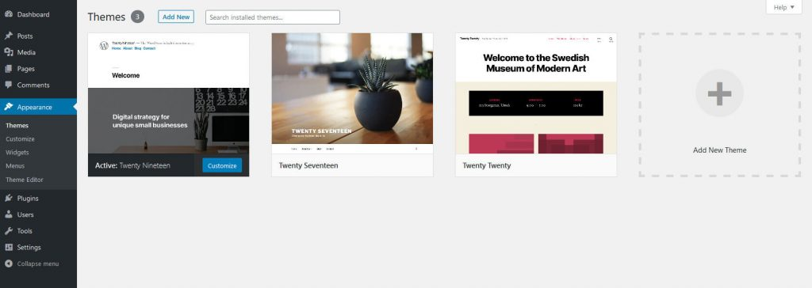
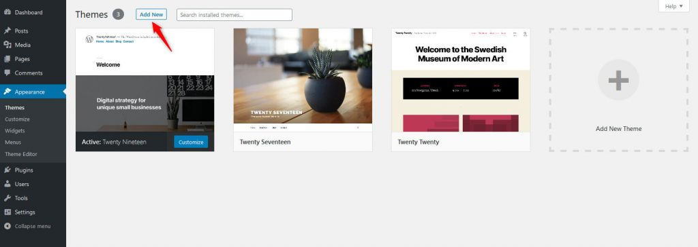
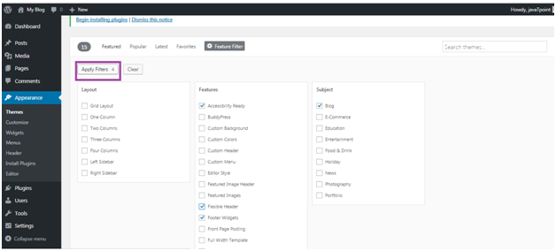
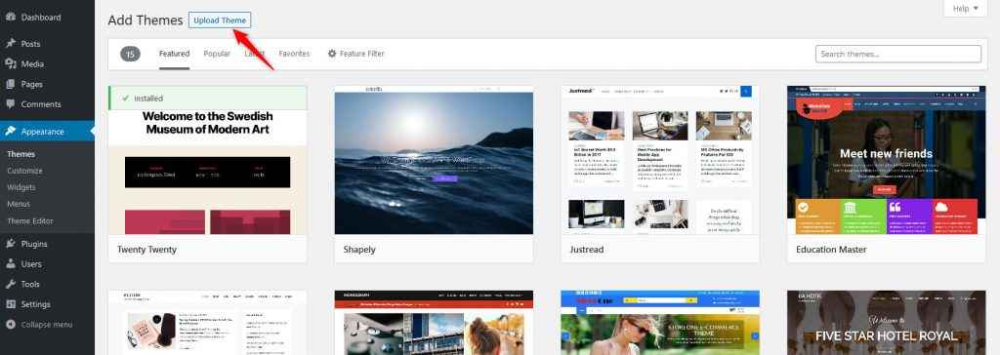
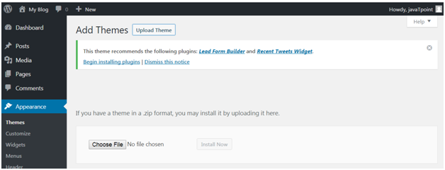
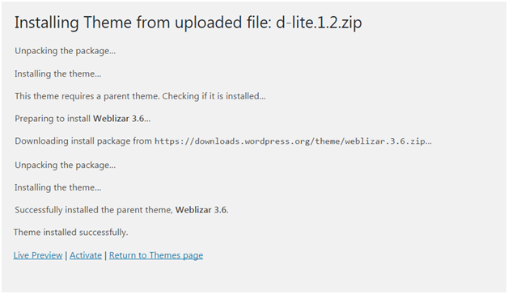

WordPress Appearance
DASHBOARD >> APPEARANCE >> THEMES
WordPress Themes
Themes provide a style (including font styling), colors, page layouts, widget positions, etc. In General a theme controls layout and appearance of your website in the front-end. You can change the theme of your site without changing the content of the site. Themes provide a unique look to your site.
When WordPress is installed, it has a pre-installed theme which is very simple and unattractive. But no one wants a website to be that much simple. To make it more attractive one can install and apply different themes from WordPress.
Types of WordPress theme
- Free WordPress provides many good looking themes absolutely free in the WordPress theme directory.
- Premium Premium themes may cost you starting from $1,000. Prize varies depending upon the design and requirement of your site. One advantage in premium themes is that they provide a reliable code base and offer support.
On Clicking Themes option, Your WordPress theme dashboard screen will look something like this:
The theme that you see first in the list on the theme subsection screen is the active theme on your WordPress website.
Add New Theme
You can install new themes directly from the WordPress theme’s repository . For this, click on the “Add New” button at the top of the theme subsection screen.
Once you’ve clicked on Add New, you will be able to browse through the featured, popular, latest, and favorite themes by clicking on any of those links.
You can use “Feature Filter” to apply filters on “Subject”, “Features”, and “Layout”. Once selected, click on “Apply Filters” to save settings.
Upload Theme
If you want to upload a new theme, and you already have a .zip folder on your computer, you can upload it by clicking the “Upload Theme” button located right after the “Add Themes” button at the top of this page.
Then choose the file that you installed and click Install Now.
Up on finishing , you will get a successfully installed message.
